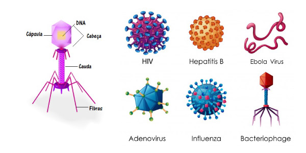
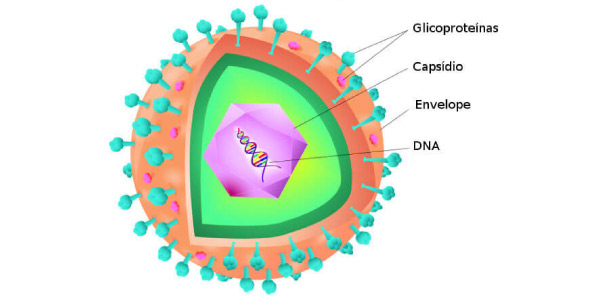

Os vírus são classificados como parasitas intracelulares obrigatórios, pois não possuem metabolismo individual, ou seja, são capazes de se reproduzirem apenas em células hospedeiras.
O que são vírus?
Os vírus não são seres complexos, muito pelo contrário, a formação dos vírus é bastante simples. Além disso são bem pequenos, medindo menos de 0,2 µm (0,2 micrômetro). Os vírus são formados por uma cápsula proteica que engloba todo o material genético, seja ele DNA, RNA ou até os dois misturados, denominado de citomegalovírus.
Em latim, vírus significa fluído venenoso ou toxina. A dengue, a gripe, a AIDS, são algumas infecções causadas pelos vírus, que são parasitas específicos dos seres vivos. Os vírus não são capazes de multiplicar o material genético sozinhos, eles precisam estar dentro de determinado organismo para exercer essa função. Quando estão fora do organismo eles são considerados seres inertes.
Apesar dos vírus terem algumas qualidades dos seres vivos, eles não possuem a capacidade de realizar as funções vitais dos seres viventes e não são formados por células. Por isso, existe um debate sobre o vírus ser ou não um ser vivo, alguns consideram que ele é um ser vivente simples e antigo, outros discordam.
A divisão do vírus é feita entre:
- Retrovírus: São compostos pelo material genético RNA.
- Adenovírus: São compostos pelo material genético DNA.
São capazes de contaminar bactérias de diferentes tamanhos e se multiplicam rapidamente após injetar o material genético dentro das células.
Os vírus podem ter várias formas diferentes e se parecem com uma caixa com várias instruções. Alguns são mais simples, porém existem os fagos ou bacteriólogo, que são considerados mais complexos por possuírem uma “cabeça” para guardar o material genético. Veja alguns exemplos das diferentes formas dos vírus:
Como é a estrutura dos vírus?
Como falamos acima, o vírus é bastante simples. Eles são constituídos por material genético envolto por uma camada proteica. Pode conter em alguns vírus um envelope membranoso que envolve a cápsula de proteínas.
- Material Genético: DNA, RNA ou os dois combinados.
- Capsídio: Cápsula proteica que envolve o material genético.
- Envelope: Derivam da membrana plasmática da célula e possuem fosfolipídeos, proteínas da membrana e glicoproteínas que contém origem viral.
Ciclo Lítico
O ciclo lítico é aquele em que o vírus penetra o material genético ao se aproximar da célula. Assim que que penetrada, o vírus se multiplica com o auxílio das organelas presentes na célula. Após ser infectada, a célula é morta e o vírus continua no ciclo e penetra outra célula.
Ciclo Lisogênico
O ciclo lisogênico é aquele em que o vírus inclui o seu material genético dentra da célula, fazendo consequentemente parte do DNA da célula e assim será multiplicado durante o processo de meiose celular.
Principais doenças virais
As principais doenças causada por vírus nos seres humanos são:
- Covid-19
- Aids
- Catapora
- Caxumba
- Chikungunya
- Condiloma acuminado
- Dengue
- Ebola
- Febre amarela
- Gripe
- Hepatite (Hepatite A, hepatite B, hepatite C e hepatite D)
- Herpes genital
- HPV
- Poliomielite
- Raiva
- Resfriado
- Rubéola
- Sarampo
- Varíola
- Zika
Agora teste o que você aprendeu com o nosso quiz.